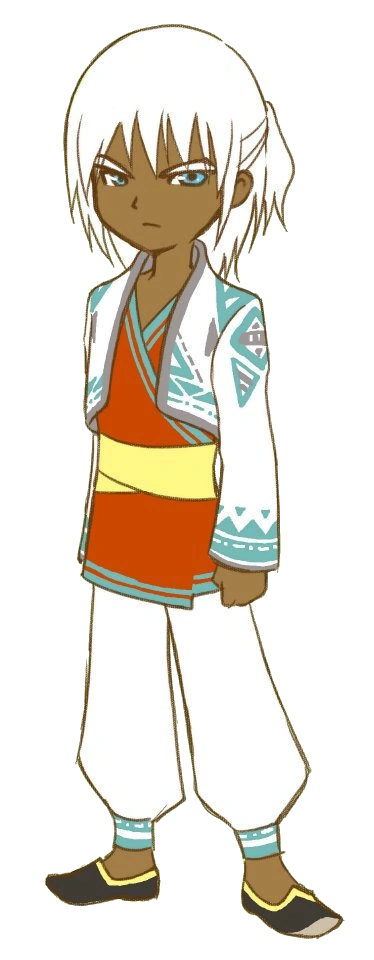

施密特
シュミット
CV.
松尾大亮
诞生日
冬26日
从一个遥远的国度来到和风镇。
似乎与菲尼克斯镇长很熟，但为什么来微风镇，却不得而知。
喜欢旅馆等安静的地方。

最喜欢
：炖菜
喜欢
：月泪草、牛奶、巧克力、米粥、锹形虫类、米饭
讨厌
：鱼、欧姆蛋、芝士、红茶、炸薯条、硬币、木材
最讨厌
：至高咖喱
爱情事件
事件 1
灰心♥
条件
地点
：旅馆
日期
：六、日
天气
：晴、阴、雪
时间
：6:00〜7:49
选项
我……走错房间了！
ま…間違えました！
(愛情度－2000)
我是来玩的
遊びにきちゃった
(愛情度＋3000)
事件 2
紫心♥
条件
地点
：旅馆
日期
：四
天气
：晴、阴、雪
时间
：10:00〜11:59
其他
：施密特、秋牡丹、斯图尔特、莎妮亚在旅馆大厅
秋牡丹、斯图尔特、莎妮亚的好感度在 10000 以上
选项
交给我吧！
まかせて！
(愛情度＋3000、莎妮亚的好感度+1000、秋牡丹、斯图尔特的好感度-1000)
你自己解决啦
自分で何とかしようよ〜
(愛情度－2000)
事件 3
蓝心♥
条件
地点
：牧场前
日期
：三、四
天气
：晴、阴、雪
时间
：9:00〜10:59
其他
：施密特在旅馆大厅
凯文、诗琼、拉拉米在牧场前或赛马场
选项
也许吧…
そうかもね…
(愛情度－2000)
才不会呢
そんな事ないよ
(愛情度＋3000)
事件 4
黄心♥
条件
地点
：牧场前
日期
：三、四
天气
：晴、阴、雪
时间
：9:00〜10:59
其他
：施密特在旅馆大厅
选项
那就早点回去吧？
早く帰ってあげたら？
(愛情度－2000)
真的要回家么？
帰らないよね？
(愛情度＋3000)
求婚
红心♥
条件
资产表 9 个心以上
房间内对白选择「至今为止…没有可以把心托付的人。但是，……」
购买双人床以后
送出青之羽毛